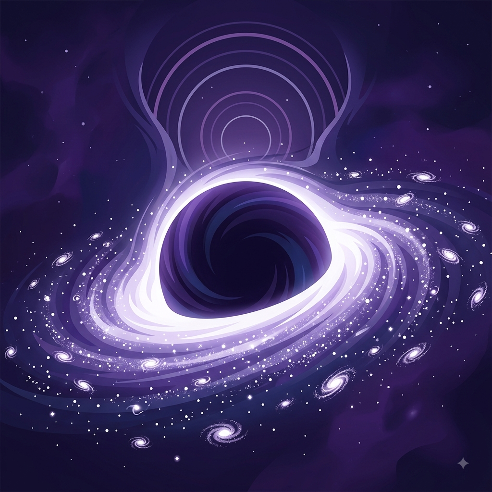

Boas-vindas ao meu Blog Espacial!
Por: Derick Augusto Fonseca dos Santos
Boas-vindas ao meu blog! Aqui vou compartilhar curiosidades e teorias fascinantes sobre astronomia, exploração planetária e as profundezas do multiverso.
Explorando os mistérios do cosmos, planetas distantes e as teorias do multiverso
Por: Derick Augusto Fonseca dos Santos
Boas-vindas ao meu blog! Aqui vou compartilhar curiosidades e teorias fascinantes sobre astronomia, exploração planetária e as profundezas do multiverso.

Por: Derick Augusto Fonseca dos Santos
No centro da maioria das galáxias existe um gigante gravitacional. Buracos negros supermassivos podem conter a massa de bilhões de sóis e deformar o próprio tecido do espaço-tempo.
Fonte: NASA Science

Por: Derick Augusto Fonseca dos Santos
Será que o nosso universo é o único? A física quântica e a cosmologia moderna sugerem que podem existir infinitos universos coexistindo, cada um com suas próprias leis da física.
Fonte: Scientific American

Por: Derick Augusto Fonseca dos Santos
Já confirmamos a existência de mais de 5.000 exoplanetas fora do nosso Sistema Solar. Alguns deles estão na zona habitável, onde a água líquida pode existir na superfície.
Fonte: Exoplanet Exploration / NASA

Por: Derick Augusto Fonseca dos Santos
O telescópio espacial James Webb está nos mostrando os primórdios do universo, capturando imagens de galáxias formadas há mais de 13 bilhões de anos com uma precisão incrível.
Fonte: ESA / Webb

Por: Derick Augusto Fonseca dos Santos
Os atalhos pelo espaço-tempo, conhecidos como buracos de minhoca, são soluções teóricas da Teoria da Relatividade Geral de Einstein que poderiam ligar pontos distantes do cosmos.
Fonte: Space.com